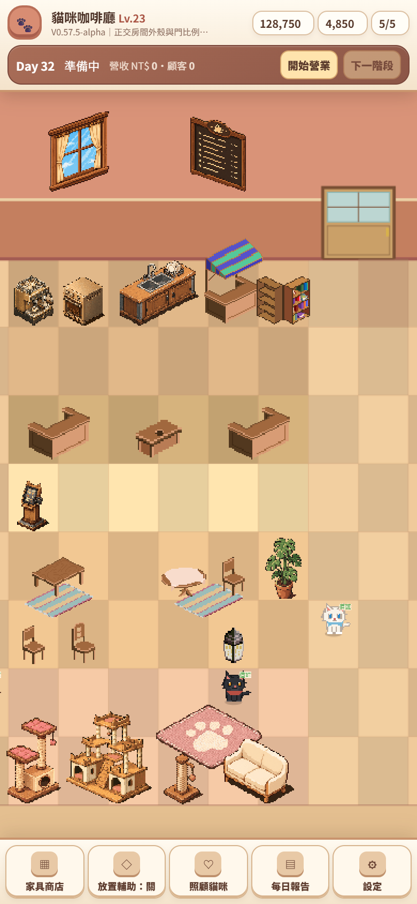
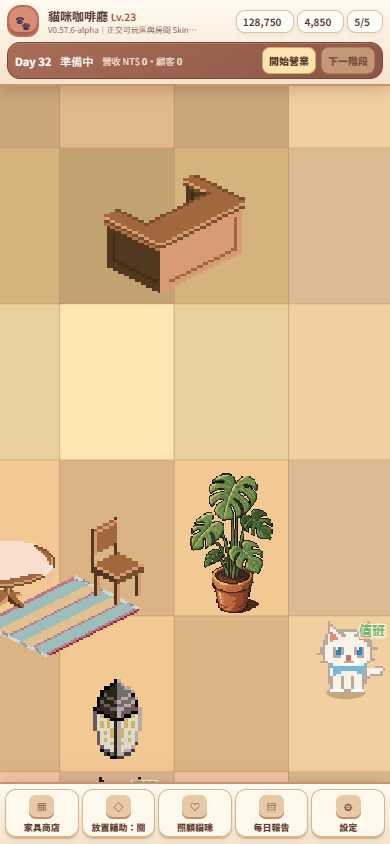
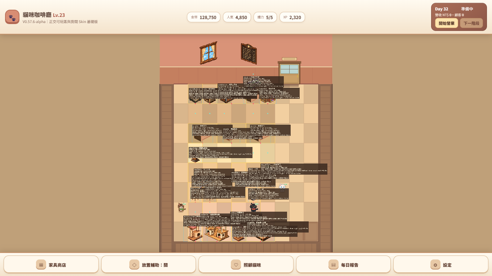

外殼和地板色接近，視覺容易把非可玩區讀成可放置空地。

明亮 10×8 playable floor、深木 fixed shell、入口保留格與雙層收邊分工清楚。

zoom 1.3 後 X/Y pan 仍有效，Camera 核心未重寫。

桌面僅確認不壞；手機直式仍是主要驗收面。
Build 0576a。Before 的 Grid 外延伸使用接近地板的淺色；After 改成固定木作 shell、明確可玩邊界與 reserved threshold，logical grid／placeableMask 未改。


